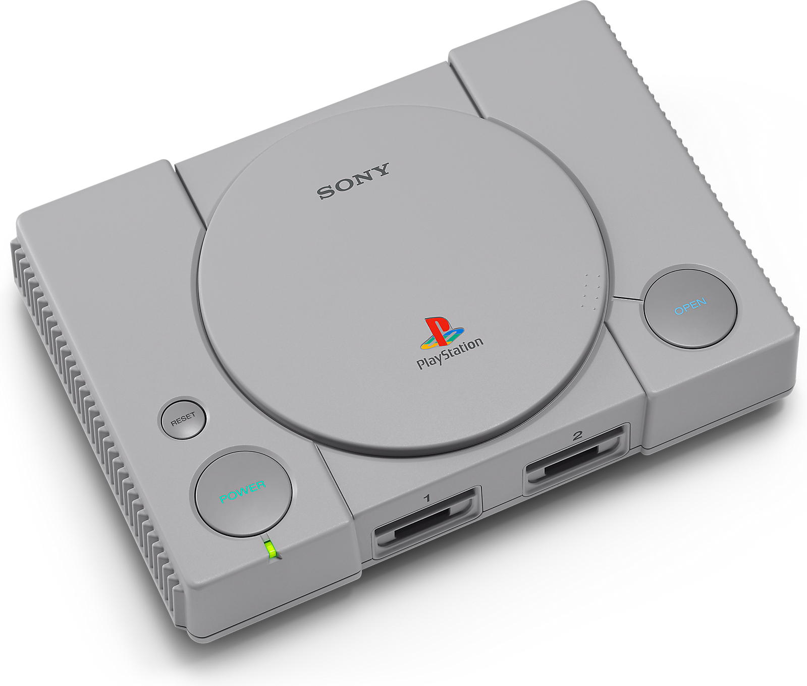
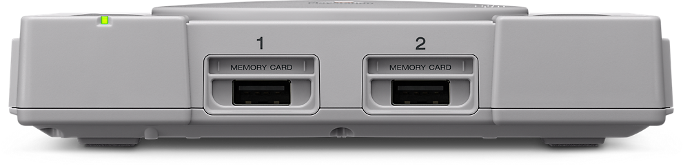
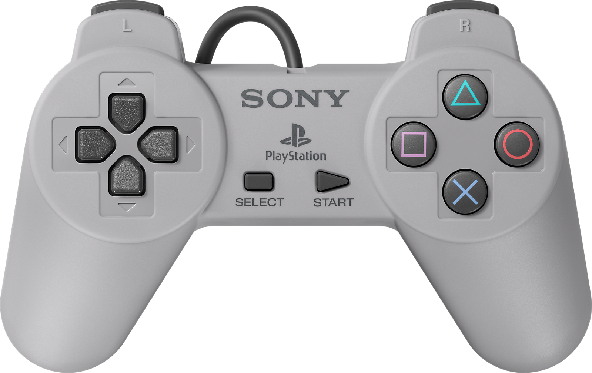

PlayStation 4
Es la cuarta videoconsola del modelo PlayStation. Forma parte de las videoconsolas de octava generación. Fue anunciada oficialmente el 20 de febrero de 2013 en el evento PlayStation Meeting 2013, aunque el diseño de la consola no fue presentado hasta el 10 de junio en el E3 2013. Es la sucesora de la PlayStation 3 y compite con Wii U y Switch de Nintendo y Xbox One de Microsoft. Su lanzamiento fue el 15 de noviembre de 2013 en Estados Unidos y en Europa y Sudamérica fue el 29 de noviembre de 2013,119 mientras que en Japón fue el 22 de febrero de 2014.

PlayStation 4 Pro
PlayStation 4 Pro se hizo pública el 7 de septiembre de 2016 y se lanzó en todo el mundo el 10 de noviembre de 2016. Su modelo de es el CUH-7000. Se trata de una versión actualizada de la PlayStation 4 con hardware más potente que permite jugar a 4K Nativos(dependiendo del Software que se este corriendo) o reescalados en otros mediante el proceso de checkboarding, además de una mejora en el rendimiento de PlayStation VR.
Incluye una GPU actualizada con 4,2 teraflops de potencia y con un reloj de CPU más alto, además de 1 Gb de memoria adicional DDR3. PS4 Pro es compatible con vídeos 4K, pero no es compatible con Ultra HD Blu-ray, usando el lector Blu-ray convencional del modelo Slim.

PS VR
Sony PlayStation VR también anteriormente conocido bajo el nombre clave de Project Morpheus, durante su desarrollo se anunció por primera vez el 18 de marzo del año 2014 en la Game Developers Conference pero en 2015 se anunció que Project Morpheus había sido bautizado como PlayStation VR, tiene un panel OLED de 5,7 pulgadas, con una resolución de matriz de subpíxeles RGB de 1080p, o 960 × 1080 × RGB por cada ojo. El visor también tiene una caja de procesador que permite la salida de vídeo de la Pantalla Social a la televisión, así como procesar los efectos de sonido 3D, y utiliza un conector para auriculares de 3,5 mm, También cuenta con 9 LEDs de posición en su superficie para PlayStation Camera con el fin de rastrear el movimiento en 360 grados de cabeza, y se conecta a la plataforma PlayStation 4 mediante HDMI y USB, funciona con sus accesorios controlables mediante PlayStation Move DualShock 4 PlayStation VR Aim Controller; con fecha de lanzamiento oficial se programo a la venta en octubre de 2016 por un costo equivalente ($399) Dólares.

PS Classic
El diseño del PlayStation®Classic asemeja perfectamente a la consola original, con el mismo logo, distribución de botones y empaque – pero 45% mas pequeño que el PlayStation de 1994.
Esta consola miniatura viene con un cable HDMI* para conectarse a tu TV. Complementada con dos controles alámbricos, mas una tarjeta de memoria virtual para guardar tus aventuras conforme vas cambiando entre los títulos.
El control original del PlayStation cambio la forma en que jugamos, con 4 botones en los hombros y un ergonómico diseño para un agarre perfecto- y el PlayStation®Classic viene con dos de estos icónicos controles en la caja.
